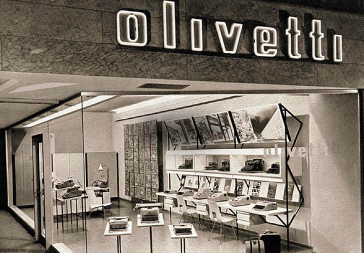

La Olivetti è stata un'azienda italiana fondata nel 1908 da Camillo Olivetti a Ivrea. Inizialmente specializzata nella produzione di macchine per scrivere, l'azienda si è poi evoluta diventando un leader nel campo dell'informatica e della progettazione industriale.
Sotto la guida di Adriano Olivetti, figlio di Camillo, l'azienda si è distinta per il suo impegno verso il miglioramento delle condizioni lavorative e l'attenzione al design. Collaborando con importanti designer e architetti, la Olivetti ha creato macchine per scrivere e altri prodotti caratterizzati da un design innovativo ed elegante.
Negli anni '50 e '60, la Olivetti ha ampliato la sua offerta introducendo calcolatrici elettroniche e computer. È stata una delle prime aziende al mondo a sviluppare computer commerciali e minicomputer, come l'Olivetti Elea 9003.
Negli anni '70, la Olivetti si è espansa a livello internazionale attraverso acquisizioni e l'apertura di filiali in diversi paesi. Tuttavia, ha affrontato difficoltà finanziarie negli anni '80, principalmente a causa di una gestione problematica.
Nel 1990, la Olivetti ha acquisito la statunitense AT&T, diventando un importante produttore di computer. Tuttavia, le crisi finanziarie hanno continuato negli anni '90 e nel 2003 l'azienda è stata acquistata dalla Telecom Italia.
Nonostante la fine dell'era Olivetti come azienda indipendente, il suo contributo nell'ambito della progettazione industriale e dell'informatica è ancora riconosciuto oggi. La Olivetti è stata una pioniera nel design e ha contribuito all'evoluzione della tecnologia, lasciando un'eredità significativa nell'industria. 